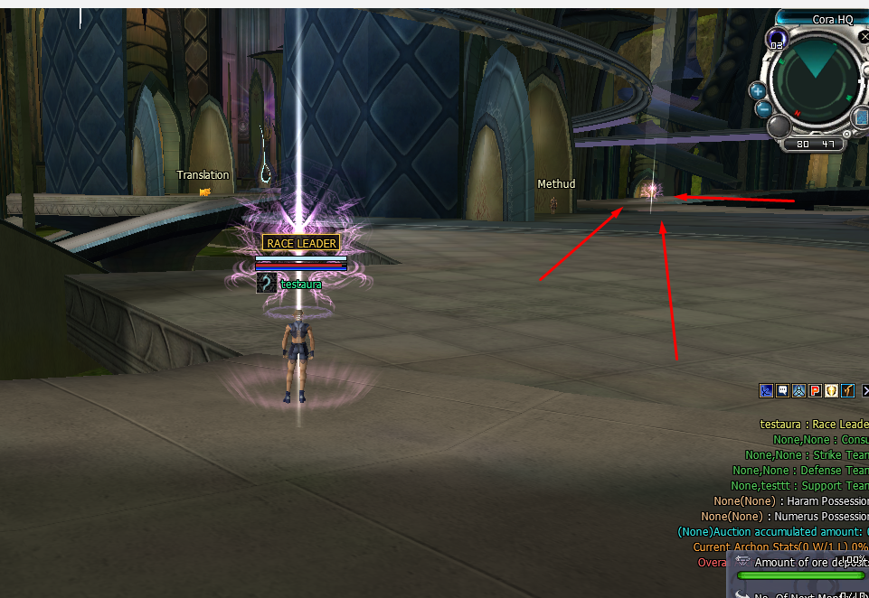

Race Leader Effect
Race Leader Effect

What it does — and why you would use it
When a player is elected race leader (the president / patriarch) or joins the council (the eight sub-leaders), the game can give them two things: a glowing world aura that marks them out, and a percent stat bonus to Attack, Defence and HP for as long as they hold office. This module lets you tune both from a single text file, separately for each race and each rank.
- The aura (what players see). The size, height and transparency of the wings, the ground ring and the ground burst, plus whether the tall light beam is shown — per race, and different for the leader vs the council.
- The bonus (what the server applies). How much Attack / Defence / HP a leader or council member gains while in office — again per race and per rank.
- Server-authoritative. The Zone server reads this file and pushes the look to every player's client, so players cannot edit their own aura — there is no client-side copy to tamper with.
RaceLeaderEffect.ini and share one Enable switch.How to activate it
- Open the module file. Edit .Server\Zoneserver\RF_Bin\Modules\RaceLeaderEffect\RaceLeaderEffect.ini in Notepad.
-
Turn it on. Under
[General], set:
With[General] Enable = 1Enable = 0the feature is inert: leaders keep the stock aura look (no tall beam) and get no stat bonus. - Tune the aura and the bonus. Edit the per-race sections described in The aura visuals and The stat bonuses below, then save.
- It applies live. A running server re-reads the file about twice a second and pushes the new aura to everyone already in the world — no restart and no re-login needed. The stat bonus updates on the leader's next stat refresh.
RaceLeaderEffect.ini stops the Zone server from starting. To turn the feature off, set Enable = 0 and leave the file in place.The aura visuals
There are six aura sections — one per race, one for the leader and one for the council:
| Section | Who it is for |
|---|---|
[BELLATO_LEADER] / [CORA_LEADER] / [ACCRETIA_LEADER] | The rank-0 race leader (president / patriarch). |
[BELLATO_SUB] / [CORA_SUB] / [ACCRETIA_SUB] | The council — the eight sub-leaders (vice presidents). |
Each section has the same keys, grouped by the four parts of the aura:
| Part | On screen | Keys |
|---|---|---|
| Wings | The energy wings / crystal spikes around the body. | WingScale, WingHeight, WingOpacity |
| Ring | The glowing ring on the ground. | RingScale, RingHeight, RingOpacity |
| Base | The ground burst and foot sparks at the feet. | BaseScale, BaseHeight, BaseOpacity |
| Beam | The tall vertical light pillar. | BeamOn (0 / 1), BeamScale, BeamHeight, BeamOpacity |
What the three value types mean (they repeat for every part):
- Scale — size multiplier.
1.0= the stock size,2.0= twice as big,0.5= half. - Height — how far to lift the part, as a fraction of the character's height.
0.0= stock,0.5= up by half a head. - Opacity — transparency,
0.0(invisible) to1.0(solid). Anything above1.0is treated as fully solid. - BeamOn —
1shows the tall pillar,0hides it.
Example — make the Cora leader's wings a little bigger, raise them, and turn the tall beam on:
[CORA_LEADER]
WingScale = 1.5
WingHeight = 0.2
WingOpacity = 1.0
RingScale = 1.0
RingHeight = 0.0
RingOpacity = 1.0
BaseScale = 1.0
BaseHeight = 0.0
BaseOpacity = 1.0
BeamOn = 1
BeamScale = 1.0
BeamHeight = 0.0
BeamOpacity = 1.0The stat bonuses
Below the aura sections are the bonus sections — one per race per office slot. Slot 0 is the race leader; slots 1–8 are the eight council seats.
[CORA_0] ; the Cora race leader
Attack = 10
Defence = 10
HP = 10
[CORA_1] ; a Cora council seat
Attack = 5
Defence = 5
HP = 5| Key | Meaning |
|---|---|
Attack / Defence / HP | A percent bonus (so 10 = +10%). Applied automatically while the player holds that office, and removed the moment they lose it. |
0 for any slot to give that office no bonus while still showing its aura.How far the aura can be seen
The aura is deliberately bright, so left unchecked it acts as a beacon that reveals where a race leader is standing from all across the map — an easy way for enemies to find and target them. By default the game only draws another player's aura while they are close by (roughly the distance your own camera pulls out to); your own aura is always shown. You can now change that range — or remove the limit entirely — with one key under [General]:
| Key | Meaning |
|---|---|
AuraViewDistance | How far (in world units) you can see other players' auras. 0 (the default) turns the limit off completely, so auras stay visible all across the map; any positive number stops drawing them beyond that distance. Around 50 matches the old built-in range. |
[General]
Enable = 1
AuraViewDistance = 0 ; 0 = visible map-wide; e.g. 80 = only within 80 unitsAuraViewDistance = 0 to let everyone admire the leaders from anywhere; put it back toward 50 if you want the old anti-spot behaviour where a distant leader's aura stops drawing until they walk closer. It is pushed live to every client, so a leader's aura reappears for nearby players as they move, with no re-login.The overhead nameplate badges
Above every office-holder's name floats a golden badge that announces their rank. It used to read RACE LEADER for everyone; now the wording matches the exact office, and you can turn each one on or off and resize the whole plate from [General]. The badge follows the same Enable switch as the aura, and shows for the president and the eight council seats (a plain guild master gets no badge).
| Office (slot) | Badge text | On/off key |
|---|---|---|
| Race leader / president (slot 0) | RACE LEADER | BadgeRaceLeader |
| Consul (slots 1 & 5) | CONSUL | BadgeConsul |
| Strike team (slots 2 & 6) | STRIKE TEAM | BadgeStrikeTeam |
| Defense team (slots 3 & 7) | DEFENSE TEAM | BadgeDefenseTeam |
| Support team (slots 4 & 8) | SUPPORT TEAM | BadgeSupportTeam |
The two overall badge switches (each office row above also has its own 1/0):
[General]
BadgeEnable = 1 ; master switch: 0 hides every badge, 1 shows them
BadgeScale = 1.0 ; overall size of the plate (1.0 = stock, 1.5 = bigger)- BadgeEnable — one switch for all badges.
1shows them,0hides every office badge at once. - BadgeScale — grows or shrinks the whole plate (background, border and position).
1.0is the stock size. - Per-office keys — the
BadgeRaceLeader/BadgeConsul/BadgeStrikeTeam/BadgeDefenseTeam/BadgeSupportTeamlines each take1or0, so you can show the president and consul but hide the team leads, for example.
RaceLeaderEffect.ini. A player on an older RF_Online.bin will keep showing the old single RACE LEADER plate. Redeploy both the server exe and the client after changing these keys.